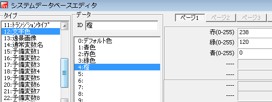

まず
左上リストから、「タイプ12:文字色」をえらんでください。
既に何か入力されている所は避けて、空いているデータを選びます。
今回は例として、4番に入力しようと思います。
分かりやすい名前を付けて、数値を入力しましょう。
数値が大きくなる程、その色がより濃く出てきます。
入力できたらOKをクリックしてください。
※光と同じで赤・緑・青の三色が全て混ざると白に、
逆に0に近づく程黒くなります。
灰色は三色の値を同じぐらいに設定する事で再現できます。
逆に鮮やかにしたい場合は、その色の数値を大きく、
そして他の色との差も大きくしましょう。
